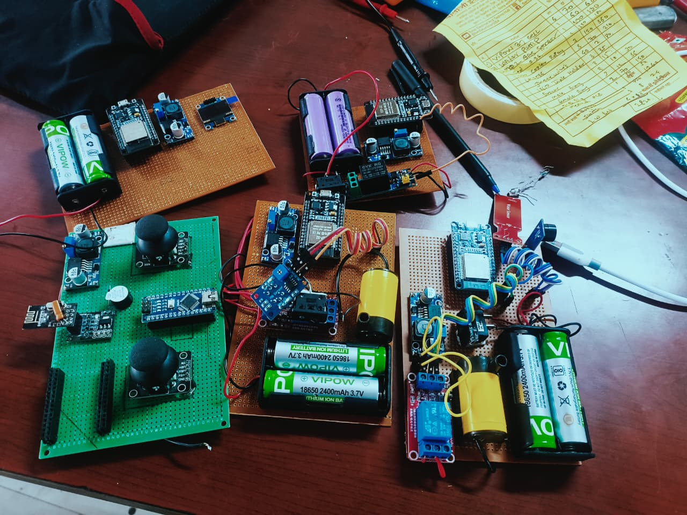

Project areas
- Practical electronics and embedded systems
- Automation and IoT
- Arduino- and ESP32-based work
Freelance · Student Builds
A collection of 20 student and freelance builds spanning practical electronics, embedded systems, automation, and IoT.
This portfolio collection represents 20 student and freelance builds. The documented areas include practical electronics, embedded systems, home, pump, and irrigation automation, and IoT. The work includes Arduino and ESP32 microcontrollers, Wi-Fi IoT, Blynk, remote monitoring and control, relay control, GSM SMS alerts, and OLED displays.
Each build has its own requirements and implementation. Circuit, firmware, and validation details should be attached to the specific project rather than generalized across the collection.
[TODO: describe the requirements and problem statement for the specific freelance build being featured.]
This page represents multiple builds, so a single schematic or PCB image would not describe the whole collection.
Design reference: [TODO: select a specific build and add its schematic or PCB image with a short explanation.]
[TODO: list the actual controller, sensors, actuators, power components, and interfaces used in the selected build.]
Challenges differ between projects in this collection, and no single case is documented here. For an individual build, record the requirement, technical constraint, diagnostic process, and verified resolution.
The collection brings together 20 student and freelance electronics and embedded-systems builds. The image below shows a selection of the project work; individual build outcomes and validation details belong with their respective project records.
